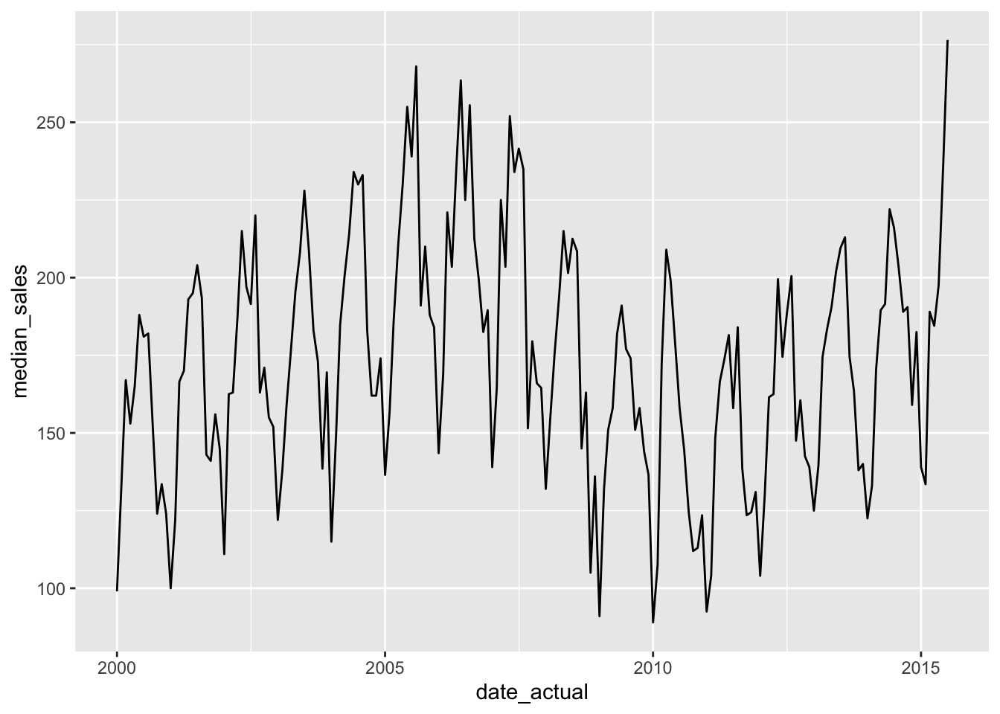
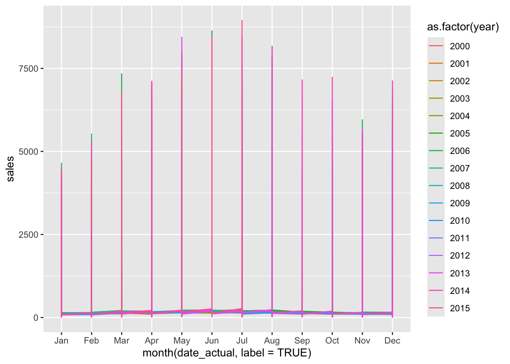
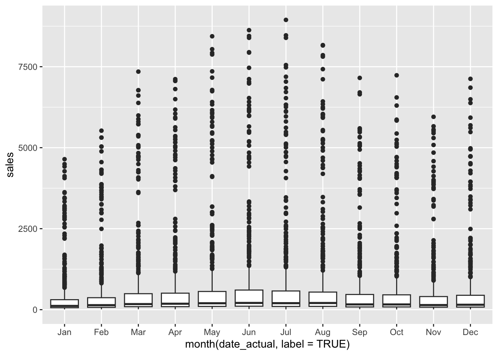

ymd("2025-08-21")[1] "2025-08-21"mdy("08/21/2025")[1] "2025-08-21"dmy("21-Aug-2025")[1] "2025-08-21"ymd_hms("2025-08-21 14:30:00")[1] "2025-08-21 14:30:00 UTC"For descriptive analysis, the focus was on questions such as: What is typical? How spread out is the data? What shape does the distribution have? With time series data, an additional question becomes important: When did it happen?
Time series data is a sequence of observations collected or recorded at successive points in time. Because observations are ordered chronologically, time series data provides a dynamic view of how a variable changes over time, rather than a static snapshot.
Suppose a CFO says” “Sales dropped 15% from Q3 to Q4.”
That number by itself doesn’t necessarily mean the business suddently got worse. Maybe sales normally decline from Q3 to Q4 and this is just a regular reoccurring observation.
With time series data, there are three things to be distinguished:
Why do dates matter in analytics? Dates can be used for several things, for example:
Dates need to actually be dates! A date stored as text like:
'2025-08-21'
is much different from an R Date object actually representing August 21, 2025. The main package used when working with dates is lubridate.
Parsing dates is the process of converting raw string dates to an actual date/time object, which can then be converted into useful time components. Raw string dates may not always be written in a consistent way, therefore different functions are used based on what the text format is.
ymd() when string = YEAR \(\rightarrow\) MONTH \(\rightarrow\) DAYmdy() when string = MONTH \(\rightarrow\) DAY \(\rightarrow\) YEARdmy() when string = DAY \(\rightarrow\) MONTH \(\rightarrow\) YEARymd_hms() when string = YEAR \(\rightarrow\) MONTH \(\rightarrow\) DAY : HH:MM:SSExample:
ymd("2025-08-21")[1] "2025-08-21"mdy("08/21/2025")[1] "2025-08-21"dmy("21-Aug-2025")[1] "2025-08-21"ymd_hms("2025-08-21 14:30:00")[1] "2025-08-21 14:30:00 UTC"Once the date is in the correct format, R can extract pieces:
year(x) = extract yearmonth(x) = extract monthquarter(x) = extract quarterwday(x) = extract weekdayhour(x) = extract hourisoweek(x) = extract week number of yearx <- ymd_hms("2025-08-21 14:30:00")
x[1] "2025-08-21 14:30:00 UTC"year(x)[1] 2025month(x)[1] 8quarter(x)[1] 3wday(x)[1] 5hour(x)[1] 14isoweek(x)[1] 34Esssentially the process is raw date string → actual date/time object → useful time components
Dates can also be created from combining variables that already exist. For example if you have year = 2025 and month = 8 you can construct an actual date.
make_date() use when year/month columns exist because it avoids rounding problems associated with fractional-year representations
# Before: year and month are separate variables
txhousing |>
select(year, month) |>
head(2)# A tibble: 2 × 2
year month
<int> <int>
1 2000 1
2 2000 2# Create an actual date from year and month
TX <- txhousing |>
mutate(
date_actual = make_date(
year = year,
month = month,
day = 1
)
)
# After: year and month have been combined into a date
TX |>
select(year, month, date_actual) |>
head(2)# A tibble: 2 × 3
year month date_actual
<int> <int> <date>
1 2000 1 2000-01-01
2 2000 2 2000-02-01 Leap years can screw up calculation of dates. For example ymd("2024-02-29") is a leap year. If you subtract five years you’d get 2019-02-29 which doesn’t exist.
d1 <- ymd("2024-02-29")lubridate has calendar awareness operators:
d1 %m-% years(5)[1] "2019-02-28"ymd("2023-01-31") %m+% months(1)[1] "2023-02-28"Once dates are represented properly, normal comparisons work:
TX |>
filter(
date_actual >= as.Date("2005-01-01"),
date_actual <= as.Date("2010-12-31")
)# A tibble: 3,312 × 10
city year month sales volume median listings inventory date date_actual
<chr> <int> <int> <dbl> <dbl> <dbl> <dbl> <dbl> <dbl> <date>
1 Abilene 2005 1 119 1.03e7 74200 570 3.7 2005 2005-01-01
2 Abilene 2005 2 130 1.18e7 74300 581 3.7 2005. 2005-02-01
3 Abilene 2005 3 170 1.45e7 71300 661 4.3 2005. 2005-03-01
4 Abilene 2005 4 171 1.64e7 80300 650 4.2 2005. 2005-04-01
5 Abilene 2005 5 176 1.81e7 87100 660 4.2 2005. 2005-05-01
6 Abilene 2005 6 230 2.41e7 92500 664 4.1 2005. 2005-06-01
7 Abilene 2005 7 177 1.85e7 93500 657 4.1 2006. 2005-07-01
8 Abilene 2005 8 216 2.41e7 97500 638 3.9 2006. 2005-08-01
9 Abilene 2005 9 165 1.71e7 92800 644 3.9 2006. 2005-09-01
10 Abilene 2005 10 161 1.64e7 92300 601 3.6 2006. 2005-10-01
# ℹ 3,302 more rowsYou can also make relative windows.
For example, find the most recent date:
max_date <- max(TX$date_actual, na.rm = TRUE)
max_date[1] "2015-07-01"Then go five years backward:
start_5y <- max_date %m-% years(5)
start_5y[1] "2010-07-01"Then:
recent <- TX |>
filter(date_actual > start_5y)
head(recent)# A tibble: 6 × 10
city year month sales volume median listings inventory date date_actual
<chr> <int> <int> <dbl> <dbl> <dbl> <dbl> <dbl> <dbl> <date>
1 Abilene 2010 8 144 17504580 122000 936 6.7 2011. 2010-08-01
2 Abilene 2010 9 116 15475763 121300 899 6.5 2011. 2010-09-01
3 Abilene 2010 10 111 14570529 111900 863 6.4 2011. 2010-10-01
4 Abilene 2010 11 115 11422741 87900 851 6.4 2011. 2010-11-01
5 Abilene 2010 12 116 15289470 118300 830 6.3 2011. 2010-12-01
6 Abilene 2011 1 68 8834493 123300 809 6.1 2011 2011-01-01 So instead of hard-coding a five-year range, you’re saying:
Give me observations from the final five years of the dataset.
For time-series data, the standard visualization is a line chart.
The lecture calculates statewide median sales for each month:
TX |>
group_by(date_actual) |>
summarise(
median_sales = median(sales, na.rm = TRUE)
) |>
ggplot(aes(date_actual, median_sales)) +
geom_line()
The conceptual structure is:
Connecting observations makes the evolution of the variable visible.
scale_x_date() then controls how frequently dates are displayed so that a long time horizon doesn’t produce an unreadable x-axis.
Seasonality is one of the central concepts of time series data.
Seasonality is a pattern that systematically repeats according to the calendar.
It can be viewed by:
Lines by year:
TX |>
ggplot(aes(
x = month(date_actual, label = TRUE),
y = sales,
group = year,
color = as.factor(year)
)) +
geom_line()
Boxplots by month
What does a typical January look like across years? What does a typical July look like?
TX |>
ggplot(aes(
x = month(date_actual, label = TRUE),
y = sales
)) +
geom_boxplot()Warning: Removed 568 rows containing non-finite outside the scale range
(`stat_boxplot()`).
Heatmaps are another view of seasonality
2005 2006 2007 2008 ...Jan ■ ■ ■ ■ Feb ■ ■ ■ ■ Mar ■ ■ ■ ■ … Dec ■ ■ ■ ■
where the fill intensity represents sales.
Month-to-month fluctuations can make the underlying trend difficult to see. A rolling average smooths those fluctuations.
monthly_sales <- TX |>
group_by(date_actual) |>
summarise(
median_sales = median(sales, na.rm = TRUE)
) |>
arrange(date_actual) |>
mutate(
moving_average = rollmean(
median_sales,
k = 12,
fill = NA,
align = "right"
)
)
monthly_sales# A tibble: 187 × 3
date_actual median_sales moving_average
<date> <dbl> <dbl>
1 2000-01-01 99 NA
2 2000-02-01 134 NA
3 2000-03-01 167 NA
4 2000-04-01 153 NA
5 2000-05-01 165 NA
6 2000-06-01 188 NA
7 2000-07-01 181 NA
8 2000-08-01 182 NA
9 2000-09-01 152 NA
10 2000-10-01 124 NA
# ℹ 177 more rowsk = 12 means a 12-observation window. Because the data are monthly, that’s a 12-month moving average.